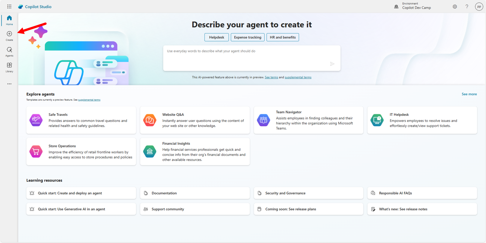
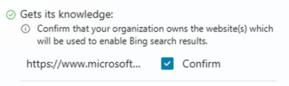
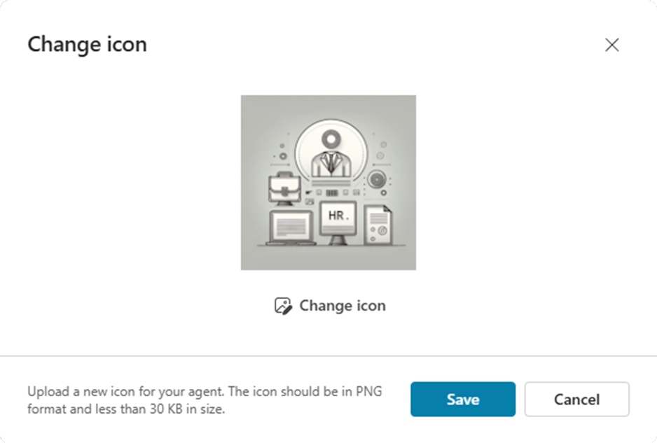
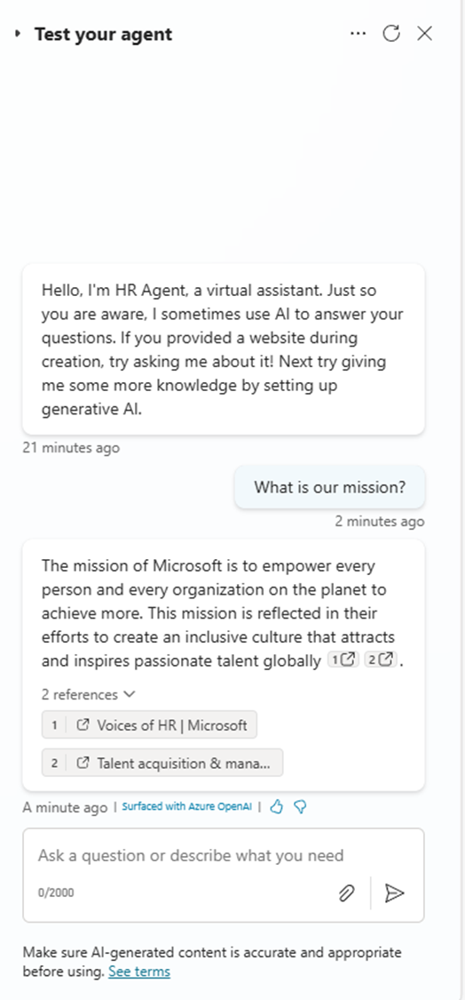

Lab MCS1 - First agent
In this lab, you'll create your first agent with Microsoft Copilot Studio. The agent that you are going to create helps users to find information about HR policies and processes to hire or layoff employees, to improve your career, and to define learning pathways. The knowledge base of the agent will be a set of documents stored in SharePoint Online and some public web content.
In this lab you will learn:
- How to create an agent with Copilot Studio
- How to configure a custom icon for your agent
- How to configure knowledge sources for your agent
- How to publish your agent in Microsoft Teams
Do these labs if you want to build agents with Microsoft Copilot Studio
Disclaimer
These samples and labs are intended for instructive and demonstration purposes and are not intended for use in production. Do not put them into production without upgrading them to production quality.
Exercise 1 : Creating an agent with Copilot Studio
In this first exercise you are going to create a new agent using Generative AI and describing what you are looking for. You are also going to configure a custom icon for the agent and to test the agent.
Step 1: Creating a new agent
To create a new agent, open a browser and, using the work account of your target Microsoft 365 tenant, go to https://copilotstudio.microsoft.com to start using Microsoft Copilot Studio.
Select Create button on the left side of the screen, like illustrated in the following screenshot.

You will be redirected to the page from which you can create a new agent. Copilot Studio allows you to create a new agent from scratch, selecting the option New agent, or to start from a template available in a set of pre-defined and useful agent templates. For the sake of simplicity, in this lab you are going to start from scratch, selecting New agent.

By default, Copilot Studio allows you to describe using natural language what the agent will be. This is a really convenient way of creating a new agent, because you can simply describe what you are looking for and Copilot Studio will process your input and create the agent accordingly to your needs. If you don't like to describe your agent in natural language, you can always select Configure and manually configure the agent.

In this lab you can provide the following initial description:
You are an agent helping employees to find information about HR policies and procedures,
about how to improve their career, and about how to define learning pathways.
When requested by Copilot Studio, give the name "HR Agent" to your custom agent. Then, instruct Copilot Studio to emphasize or avoid specific information providing the following instruction:
Emphasize everything that helps team building, inclusion, and the growth mindset
Then, define a professional tone for your agent, providing the following input:
It should have a professional tone
When asked by Copilot Studio, configure an initial data source for your agent providing the following instruction:
Let's use this website: https://www.microsoft.com/en-us/human-resources
You will need to confirm that your organization owns the site that you provided.

Important
In this sample agent, we are going to use some of the public content available on the HR website of Microsoft as the data source. You will also need to confirm that your organization owns the provided data source, to enable Microsoft Bing search results on that site. While creating your own agent, you should provide the URL of a HR site that your company actually owns.
You are now ready with the creation of your agent. On the right side of the screen, you always see a recap of the features and capabilities that you configured for your agent, based on the instructions that you provided to Copilot Studio. Select the Create button in the upper right corner and wait for Copilot Studio to create the agent for you.
Once the agent will be ready, you will see a new screen like the following one.

You can now start testing your agent using the testing panel on the right side, or you can fine tune the agent settings using the configuration options in the Overview tab.
Step 2: Changing the agent's icon
Let's start changing the icon of the agent by selecting the Edit button in the upper right corner of the Overview tab. The Details section will switch to edit mode, like in the following screen.

You can notice that the input statements provided in step 1 of this exercise are now part of the Description and Instructions fields of the agent.
Select the Change icon button to show a dialog from where you can upload a custom icon. If you like, you can use the following icon.

Once you are done with the upload of the new icon, select the Save button.
Step 3: Testing the agent
To test the agent you simply rely on the right panel and start writing prompts. For example, let's provide the following prompt:
What is our mission?
In the following screenshot you can see the answer provided by the agent and based on the content of the website that we provided as the data source.

Notice also that the agent provides references to pages from the websites provided as the data source and highlights that the answer comes from Azure OpenAI.
Exercise 2 : Extending the knowledge base
In this exercise you are going to add some documents (Word and PDF) stored in Microsoft SharePoint Online as additional knowledge base to your agent.
Step 1: Adding SharePoint Online knowledge base documents
Download this zip file consisting of few files (Word, PowerPoint, PDF) by selecting this link.
Extract the files from the zip and upload them to the Documents library of a SharePoint Teams site in the same tenant where you are making your agent with Copilot Studio. These documents were generated by Microsoft 365 Copilot for the sake of having some additional knowledge base to feed the agent.
Copy the absolute url of the site. For example: https://xyz.sharepoint.com/sites/contoso

From the Overview tab of the agent that you made before, scroll to the Knowledge section. You will find the website that you configured in Step 1 of Exercise 1. Select + Add knowledge to add the SharePoint site and its documents as an additional knowledge source.

From the dialog window that pops up you can add additional knowledge sources like:
- Files: to manually upload files that will become part of the knowledge base
- Public websites: to add additional websites
- SharePoint: to configure sites or libraries in SharePoint Online
- Dataverse: to add tables in Dataverse
- Advanced: to consume enterprise data connections like Azure AI Search, Azure SQL, Microsoft Copilot Connectors, or third party data connections
Select SharePoint and, in the dialog popping up, provide the URL of the site where you uploaded the files and select Add.

When you configure a SharePoint data source, you also need to specify a Name and a Description. It is fundamental to provide a meaningful name and description. In fact, Copilot Studio will be able to better understand what's inside the data source and, when in the upcoming labs you will enable generative orchestration, it will be possible to identify the right data source to use when answering to users' prompts via generative AI.
Select the Add button in the lower part of the screen and wait for Copilot Studio to process the new knowledge base that you just added.
When the knowledge base will be updated, in the Overview tab you will see both the public website and the SharePoint Online site.

Important
When configuring SharePoint Online sites as the knowledge base for an agent in Copilot Studio, users will only be able to get answers and content from documents that they have access to. The security and the access control are guaranteed by the Microsoft 365 security infrastructure and Copilot Studio agents access documents on behalf of the current user.
Step 2: Testing the updated agent
Now you can test again the agent, using the right side panel. For example, let's provide the following prompt:
How can we hire new people in our company?
The agent will reply back with information about the hiring procedures and providing references to the documents stored in the SharePoint Online knowledge base that you provided.

Now, for the sake of completeness, try to provide the following prompt to the agent:
How can I cook spaghetti alla carbonara?
You will notice that you still get back an answer from the agent, even if the request does not pertain to HR related topics. Of course, you can try to cook spaghetti alla carbonara, if you like pasta! 🍝 However, what you see is not necessarily the intended behavior for your agent. In fact, an agent should be a specialized assistant focused on a specific topic or area.
Step 3: Disabling general knowledge
If you want to have your agent fully focused on your custom knowledge base only, you need to disable the General knowledge. Select the Settings command in the upper right corner, activate the Generative AI tab (active by default), scroll to the Knowledge section and disable the option "Use general knowledge", like illustrated in the following screenshot.

When the general knowledge will be disabled, try again asking to the agent something completely out of context.

Now, you will get a proper answer, informing you that the agent cannot help you with what you are looking for.
Additional information about general knowledge
You can find additional information about knowledge sources in agents made with Microsoft Copilot Studio reading the following article.
Exercise 3 : Publishing the agent
In this final exercise of this lab you are going to publish your custom agent in Microsoft Teams.
Step 1: Publishing the agent in Microsoft Teams
To publish an agent made with Copilot Studio you need to select the Publish button in the upper right corner of the agent editor.
Selecting the command will prompt you for confirmation. Once confirmed, the publishing process takes a while and in the meantime you see a "Publishing ..." message. Publishing an agent registers it in the target Power Platform environment, but does not make it available in any target platform.
In order to make the agent actually available in a specific target platform (channel), you need to 1️⃣ select the Channels tab in the agent editor and then you can choose one or more target channels to make the agent available for. For example, to publish the agent in Microsoft Teams, as a bot, you need to 2️⃣ select Teams + Microsoft 365 as the target channel.

By default, when you make and agent and publish it with default settings, the agent will be configured for Microsoft authentication, which means that the agent will rely on Microsoft Entra ID authentication in Teams, Power Apps, or Microsoft 365 Copilot. With the default authentication settings, the agent can only be published in Microsoft Teams, as you can notice from the warning message displayed at the top of the Channels tab in the previous screenshot.
Copilot Studio Authentication model
You can learn more about authentication of agents in Copilot Studio reading the document Configure user authentication in Copilot Studio.
Premium license for Microsoft Copilot Studio
In the screenshot above, there is also an information bar about the licensing model and the potential requirement of a Premium license. In fact, when you use Copilot Studio and you rely on premium features like premium connectors, you need to upgrade your license accordingly. Luckily, if you are just learning and testing with Microsoft Copilot Studio, you can activate a 60-days free trial period with the Premium license.
When you select the Teams + Microsoft 365 channel a side panel shows up and allows you to select the Add channel button.

Once the agent is enabled on the Microsoft Teams channel, the side panel updates and shows a confirmation message, as well as few commands to edit the agent details and to open the agent in the Microsoft Teams client. There will also be a button Availability options that you can select to see the various options you have to access the agent in Microsoft Teams.
If you registered the channel to support Microsoft 365 Copilot, you can also select the link See agent in Microsoft 365 to access the agent directly in the Microsoft 365 Copilot chat user experience.

Selecting the Availability options button you can:
- Copy a link to use the agent in Microsoft Teams
- Download a ZIP file with a package that you can upload to the Teams app store
- Make the agent available in the Teams app store, choosing if it will be available to the whole organization or just to selected users

Publishing of the agent in Microsoft Temas is now completed.
Step 2: Testing the agent in Microsoft Teams
You are now ready to test the agent in Microsoft Teams. In the Availability options panel select the Copy link button to copy a link to the agent. Then open a new browser tab and paste the just copied link, then press ENTER to browse to that URL.
Initially you will see the Microsoft Teams client showing a new app that represents your agent. Select the Add button to add the app to your client and the select Open in the following dialog.

After a while, the Microsoft Teams client will show a chat with a bot, which is actually your agent. Provide a prompt, for example the one you already used before:
How can we hire new people in our company?
Wait for the answer and you will see that the agent will reply back to you with content in the context of HR and with references to the documents that are part of its knowledge base.

Notice also the disclaimer, at the top of the answer, about the fact that the provided content is "AI generated" to make the user aware that she/he is consuming an AI platform.
CONGRATULATIONS!
Now your agent is fully functional and ready to be used in Microsoft Teams. In the next labs you will be able to customize and fine tune its behavior.
Start here with Lab MCS2, to define topics in your agent with Copilot Studio.